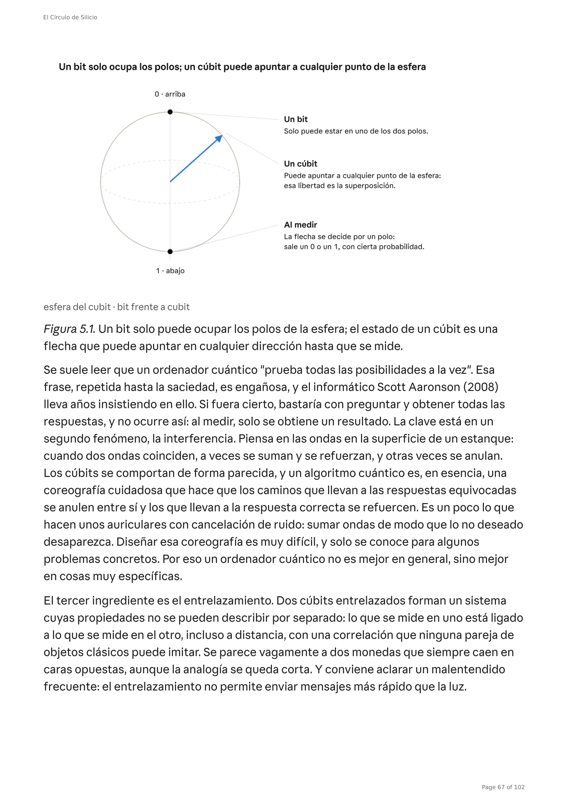

Capítulo 5. La revolución cuántica
La computación cuántica tiene una reputación peculiar. Para unos es la tecnología que lo cambiará todo, desde los medicamentos hasta la seguridad de internet. Para otros es una burbuja de titulares. La verdad, como casi siempre, está en medio, y es más interesante que cualquiera de los dos extremos: se trata de un campo científico real, con avances
reales, pero con un camino por delante más largo y menos claro de lo que suele contarse. Por eso este capítulo mantiene una regla: separar siempre lo que ya existe, lo que es posible pero incierto y lo que es todavía una promesa.
Es, además, el capítulo donde el hilo del error se vuelve central. Los ordenadores del Capítulo 2 suprimen el error, y la vida lo explota; los ordenadores cuánticos tienen que combatirlo en condiciones mucho más duras, porque su información es tan frágil que no se puede copiar ni leer sin alterarla. Casi toda la ingeniería cuántica actual es, en el fondo, ingeniería contra el error. Y es también el vocabulario más resbaladizo, como se anticipó en el Capítulo 4. “Cuántico” se ha convertido en un adjetivo de marketing que se aplica a terapias, a coches y a filosofías de vida, y la expresión “salto cuántico” se usa para hablar de un gran cambio, cuando en física designa justo lo contrario: el cambio más pequeño posible.
Antes de empezar conviene corregir una idea muy extendida. Un ordenador cuántico no es una versión más rápida del ordenador de siempre. No sustituirá al chip de silicio del Capítulo 2, ni hará más rápido tu teléfono, ni ejecutará mejor un procesador de textos. Es otro tipo de máquina, que funciona con otras reglas y que, según lo que se sabe hoy, solo ayudaría en algunos problemas muy concretos. Entender por qué exige mirar, con calma, qué cambia cuando la información deja de ser un interruptor.
5.1 Más allá del cero y el uno: el cúbit
En el Capítulo 2 vimos que la unidad básica de la informática es el bit, que solo puede estar en uno de dos estados, 0 o 1, como un interruptor encendido o apagado. La unidad básica de la computación cuántica es el cúbit (en inglés, qubit, de “quantum bit”). Igual que el bit, es un sistema físico con dos estados de referencia. A diferencia del bit, puede estar en una combinación de los dos (Nielsen y Chuang, 2010). Una imagen que ayuda es la de una flecha. Un bit es una flecha que solo puede apuntar hacia arriba o hacia abajo. Un cúbit es una flecha que puede apuntar en cualquier dirección de una esfera, con “arriba” y “abajo” en los polos. Esa libertad de orientación es lo que se llama superposición.
Es una imagen imperfecta, como todas las que se usan para hablar de física cuántica, pero sirve para entender dos cosas. La primera es que la información que guarda un cúbit es más rica que la de un bit. La segunda es que, cuando se mide, el cúbit deja de ser una flecha libre: la medición lo obliga a decidirse por “arriba” o por “abajo”, y el resultado que se obtiene es siempre un 0 o un 1. Lo que cambia es la probabilidad de cada uno, que depende de hacia dónde apuntaba la flecha.
esfera del cubit · bit frente a cubit
Figura 5.1. Un bit solo puede ocupar los polos de la esfera; el estado de un cúbit es una flecha que puede apuntar en cualquier dirección hasta que se mide.
Se suele leer que un ordenador cuántico “prueba todas las posibilidades a la vez”. Esa frase, repetida hasta la saciedad, es engañosa, y el informático Scott Aaronson (2008) lleva años insistiendo en ello. Si fuera cierto, bastaría con preguntar y obtener todas las respuestas, y no ocurre así: al medir, solo se obtiene un resultado. La clave está en un segundo fenómeno, la interferencia. Piensa en las ondas en la superficie de un estanque: cuando dos ondas coinciden, a veces se suman y se refuerzan, y otras veces se anulan. Los cúbits se comportan de forma parecida, y un algoritmo cuántico es, en esencia, una coreografía cuidadosa que hace que los caminos que llevan a las respuestas equivocadas se anulen entre sí y los que llevan a la respuesta correcta se refuercen. Es un poco lo que hacen unos auriculares con cancelación de ruido: sumar ondas de modo que lo no deseado desaparezca. Diseñar esa coreografía es muy difícil, y solo se conoce para algunos problemas concretos. Por eso un ordenador cuántico no es mejor en general, sino mejor en cosas muy específicas.
El tercer ingrediente es el entrelazamiento. Dos cúbits entrelazados forman un sistema cuyas propiedades no se pueden describir por separado: lo que se mide en uno está ligado a lo que se mide en el otro, incluso a distancia, con una correlación que ninguna pareja de objetos clásicos puede imitar. Se parece vagamente a dos monedas que siempre caen en caras opuestas, aunque la analogía se queda corta. Y conviene aclarar un malentendido frecuente: el entrelazamiento no permite enviar mensajes más rápido que la luz.
La importancia del entrelazamiento es cuantitativa. Para describir con números el estado de un sistema de n cúbits entrelazados hacen falta del orden de 2 elevado a n valores. Con 50 cúbits, esa cantidad supera lo que se puede manejar por fuerza bruta incluso en los mayores supercomputadores. Con unos 300, superaría el número de átomos del universo observable. Ese crecimiento explosivo es la razón por la que simular sistemas cuánticos en un ordenador convencional es tan difícil, y por la que el físico Richard Feynman propuso, en 1981, la idea que dio origen a todo este campo: si la naturaleza es cuántica, quizá la mejor forma de simularla sea con una máquina cuántica (Feynman, 1982).
Las aplicaciones que se estudian con seriedad son pocas. La primera es simular sistemas cuánticos, como moléculas y materiales, que es la idea de Feynman y la más natural, y que se verá en la sección 5.5. La segunda es factorizar números grandes, gracias al algoritmo que Peter Shor ideó en 1994 (Shor, 1997), con consecuencias para la criptografía que se verán en la sección 5.4. La tercera son las búsquedas, donde el algoritmo de Lov Grover (1996) ofrece una aceleración moderada, no espectacular. Para casi todo lo demás, incluidas las tareas de inteligencia artificial de las que se habló en el Capítulo 3, no hay una ventaja cuántica demostrada. Esta es una de las mayores distancias entre el discurso comercial y el estado de la ciencia.
Una vez más, la materia reaparece. Un cúbit no es una idea: es un objeto físico que hay que fabricar y controlar, y hay varias maneras de hacerlo, de las que depende buena parte de la ingeniería que viene después. Los circuitos superconductores son diminutos circuitos eléctricos fabricados sobre un chip con técnicas parecidas a las de los microchips, y los usan, por ejemplo, IBM y Google. Los iones atrapados son átomos individuales con carga eléctrica, suspendidos en el vacío por campos electromagnéticos y manipulados con láseres (Bruzewicz et al., 2019), y los usan empresas como Quantinuum e IonQ. Los átomos neutros son átomos sin carga sostenidos por haces de luz láser, llamados pinzas ópticas (Bluvstein et al., 2024). Los fotones son partículas de luz, y los espines en silicio aprovechan una propiedad magnética de los electrones en materiales parecidos a los de la industria de los chips. No se sabe cuál de estas vías ganará, o si varias convivirán, cada una útil para cosas distintas.
5.2 La ingeniería del frío y de la fragilidad
El gran problema de la computación cuántica es que los cúbits son extraordinariamente frágiles. Para que funcionen tienen que estar aislados del resto del universo, y cualquier interacción con el entorno, sea una vibración, un campo magnético, una partícula perdida o un poco de calor, puede arruinar el cálculo. A ese proceso de contagio con el entorno se le llama decoherencia: el cúbit pierde sus propiedades cuánticas y se comporta como un bit corriente, y con él se pierde la información (Zurek, 2003). El resultado es que los cúbits
cometen muchos más errores que los transistores de un chip convencional, que son tan fiables que casi nunca fallan. Gran parte de la ingeniería cuántica consiste en pelear contra ese ruido.
En el caso de los circuitos superconductores, una de las formas más desarrolladas de construir cúbits, una de las soluciones es el frío. Estos cúbits son circuitos eléctricos que solo muestran comportamiento cuántico a temperaturas cercanas al cero absoluto, en torno a diez o veinte milikelvin, es decir, unas centésimas de grado por encima del cero absoluto. Para hacerse una idea, el espacio profundo, que parece lo más frío que existe, está a unos 2,7 kelvin, cientos de veces más cálido. Para conseguirlo se usa una máquina llamada refrigerador de dilución, la imagen más icónica de la computación cuántica: una especie de lámpara de araña dorada que cuelga boca abajo, con varias placas escalonadas. El chip se enfría por etapas, desde la temperatura ambiente hasta unos 50 kelvin, luego unos 4, luego menos de uno, y finalmente la última etapa, a unos 0,01 kelvin. El refrigerante es una mezcla de dos isótopos de helio, y uno de ellos, el helio-3, es un recurso escaso y caro (Krinner et al., 2019).
Hay otro problema, menos conocido, que se suele llamar el muro del cableado. Cada cúbit necesita sus propias conexiones para controlarlo y leerlo, y cada cable que baja desde el exterior caliente deja pasar calor a una zona que debe mantenerse casi congelada (Krinner et al., 2019). Escalar de cientos a millones de cúbits significa multiplicar los cables y el calor, lo que obliga a repensar la electrónica de control, y parte de ella ya se está diseñando para funcionar dentro del propio refrigerador.
Pero hay una corrección importante a la idea de que todos los ordenadores cuánticos necesitan un frío extremo. No es así. Los de iones atrapados y de átomos neutros no usan refrigerador de dilución. En ellos, los átomos se mantienen en una cámara de ultra alto vacío y se enfrían con luz láser, una técnica que puede llevar a los átomos a temperaturas aún más bajas que las del refrigerador, pero solo a los átomos y no a toda la máquina; el resto del equipo funciona a temperatura ambiente. Los sistemas de fotones, por su parte, no necesitan frío para sus partículas, aunque a menudo usan detectores enfriados. Cada vía tiene sus ventajas e inconvenientes. En términos muy generales, los circuitos superconductores son rápidos, pero tienen vidas cortas y requieren el frío extremo. Los iones atrapados son los más precisos, pero más lentos y más difíciles de ampliar. Los átomos neutros crecen deprisa en número, pero con menos precisión por ahora. Ninguno es una solución perfecta.
Incluso en las mejores condiciones, los cúbits fallan. La solución teórica, propuesta en los años noventa, es la corrección cuántica de errores: combinar muchos cúbits físicos para formar un solo cúbit lógico, mucho más fiable que cualquiera de sus componentes (Shor, 1995; Steane, 1996). Aquí el hilo del error toma una forma que no existía en los capítulos anteriores. En un ordenador convencional, la defensa básica es la redundancia: copiar la información para poder reconstruirla. En el mundo cuántico eso está prohibido por un
teorema, el de la imposibilidad de clonar: no se puede hacer una copia exacta de un estado cuántico desconocido (Wootters y Zurek, 1982). Tampoco se puede mirar el cúbit para comprobar si está bien, porque mirarlo lo destruye. Se hace algo ingenioso. Se reparte la información entre muchos cúbits y, con otros cúbits auxiliares, se comprueba de forma indirecta si vecinos que deberían coincidir siguen coincidiendo, sin llegar a preguntar qué valor tiene cada uno. Es como unos guardianes que comprueban si dos cajas contienen lo mismo sin abrirlas: si algo no cuadra, saben que hay un error y dónde, sin haber leído el contenido. Por eso se habla de corregir errores “a ciegas”. El esquema más estudiado, el código de superficie, organiza los cúbits en una cuadrícula en la que este tipo de comprobaciones se hacen continuamente (Fowler et al., 2012).
Hay además un punto crítico, un umbral. Si los cúbits físicos son suficientemente buenos, añadir más cúbits a la corrección reduce los errores. Si no lo son, añadir más cúbits solo añade más ruido. Que este umbral existe es un resultado teórico de los años noventa (Knill et al., 1998; Aharonov y Ben-Or, 2008), y durante casi treinta años cruzarlo en un experimento fue una meta pendiente.
En diciembre de 2024, el equipo de Google Quantum AI publicó en la revista Nature un experimento con su chip Willow, de 105 cúbits. Mostraron que, al agrandar el código de corrección de errores, de 3 por 3 a 5 por 5 y a 7 por 7 cúbits, el error del cúbit lógico se reducía aproximadamente a la mitad con cada paso. Su mejor cúbit lógico duraba más del doble que el mejor de sus cúbits físicos (Google Quantum AI, 2025a). Era la primera demostración clara de que la corrección de errores cuánticos funciona a escala creciente. Conviene leerlo con la cabeza fría, como los propios autores: la computación cuántica tolerante a fallos a gran escala exige tasas de error mucho más bajas que las de Willow. Es un paso decisivo y también un primer paso. Además, el método tiene un coste elevado: con el código de superficie hacen falta del orden de miles de cúbits físicos por cada cúbit lógico. Algunas propuestas, como las de IBM basadas en otro tipo de códigos, aspiran a reducir ese gasto de forma drástica, pero requieren conexiones entre cúbits lejanos que no son fáciles de fabricar (Bravyi et al., 2024).
5.3 La era NISQ: máquinas imperfectas en busca de utilidad
En 2018, el físico John Preskill, del Instituto Tecnológico de California (Caltech), propuso un nombre para la etapa en la que se estaba entrando: NISQ, siglas en inglés de “cuántico ruidoso de escala intermedia”. “Intermedia” quería decir máquinas de entre unas decenas y unos pocos cientos de cúbits. “Ruidosa” quería decir que no se podían corregir bien sus errores. Preskill advertía en ese mismo texto de que un ordenador de 100 cúbits no cambiaría el mundo de inmediato, y que debía verse como un paso hacia máquinas más potentes (Preskill, 2018). Ese tono prudente es una buena vara de medir para todo lo que ha venido después.
En los últimos años se han publicado varios resultados importantes, y conviene leerlos con precisión. El más sólido es el de corrección de errores de Willow, que se acaba de ver y que está publicado en una revista científica de primer nivel (Google Quantum AI, 2025a).
En octubre de 2025, Google informó, también en Nature, de un algoritmo llamado Quantum Echoes ejecutado en Willow. Según la empresa, resolvió una tarea unas 13.000 veces más rápido de lo que lo haría el mejor algoritmo clásico conocido en un supercomputador de primer nivel. La tarea consistía en estudiar cómo se propaga la información en un sistema cuántico, y el resultado se calificó de “verificable” en el sentido de que otro ordenador cuántico de calidad comparable puede reproducirlo (Google Quantum AI, 2025b). En un trabajo aparte, con la Universidad de California en Berkeley, la empresa usó la misma idea como prueba de concepto para interpretar datos de resonancia magnética nuclear de moléculas pequeñas, sin ventaja sobre los métodos clásicos. Es un resultado notable, pero conviene recordar dos matices: se trata de un problema de referencia diseñado para mostrar la ventaja, no de una aplicación con valor práctico, y estas afirmaciones suelen provocar réplicas de los investigadores en computación clásica, que a veces recortan la ventaja con nuevos métodos.
También se han demostrado cúbits lógicos con distintas tecnologías. Un equipo de Harvard y de la empresa QuEra mostró en 2023 un procesador de átomos neutros con decenas de cúbits lógicos (Bluvstein et al., 2024). Quantinuum presentó en noviembre de 2025 su máquina Helios, de 98 iones atrapados, y comunicó haber obtenido 48 cúbits lógicos con corrección de errores y 94 con detección de errores, una protección más débil, con una codificación muy poco costosa en cúbits físicos. Estos últimos son resultados comunicados por las propias empresas, y la lectura cuidadosa pasa por distinguir entre corregir y solo detectar errores, y por mirar qué operaciones se hicieron con esos cúbits.
Por último, están las hojas de ruta. IBM ha anunciado que quiere construir hacia 2029 un sistema llamado Starling, con 200 cúbits lógicos, capaz de ejecutar cien millones de operaciones (IBM Quantum, 2025). Es un objetivo de la empresa, no un hecho, aunque la compañía sostiene que lleva años cumpliendo sus hitos previos. Google, Quantinuum y otras apuntan a fechas parecidas.
El campo tiene también su cara conflictiva, y Microsoft es un buen caso para entenderla. Esta empresa lleva casi dos décadas apostando por un tipo de cúbit llamado topológico, que en teoría sería mucho más resistente a los errores. En febrero de 2025 anunció un chip llamado Majorana 1 y dijo haber creado el primer cúbit de ese tipo. La comunidad científica reaccionó con escepticismo: el anuncio se hizo con una nota de prensa y pocos datos, y la revista Nature, que publicó un artículo relacionado (Microsoft Azure Quantum, 2025), aclaró expresamente que sus resultados no constituyen evidencia de la presencia de los estados buscados. La empresa había sufrido un episodio previo, una retractación en 2021 de un artículo de 2018 sobre el mismo asunto. En 2026, un análisis del físico Henry
Legg publicado en Nature cuestionó la interpretación que hace la empresa de sus datos, y Microsoft publicó una réplica. Según la prensa, la empresa presentó en junio de 2026 una versión nueva del chip. El debate sigue abierto, y el episodio no significa que los cúbits topológicos sean imposibles, sino que, en este terreno, un comunicado de prensa no es una demostración, y que la ciencia verifica despacio.
El panorama a finales de 2026 puede resumirse así. Hay máquinas con cientos y, en algunos casos, algo más de mil cúbits físicos, de calidad variable. Se han demostrado experimentos de corrección de errores a pequeña escala y hay decenas de cúbits lógicos en el laboratorio. Hay resultados de ventaja cuántica en problemas diseñados para mostrarla. Lo que no existe todavía es un ordenador cuántico tolerante a fallos a gran escala, y no hay consenso en que ninguna máquina haya resuelto un problema de utilidad práctica que quede fuera del alcance de los ordenadores clásicos. Algunos analistas consideran que la era NISQ empieza a quedar atrás, pero lo que viene después sigue siendo, en gran parte, una hoja de ruta.
Una idea atractiva, muy repetida en la divulgación, es que los ordenadores cuánticos actuales servirían para descubrir los materiales con los que se construirán los ordenadores cuánticos del futuro, cerrando un círculo. Hasta donde alcanza la literatura científica consultada, no hay un respaldo sólido para presentarlo como un hecho. Las máquinas actuales son demasiado pequeñas y ruidosas para ese tipo de tarea. Es una posibilidad de muy largo plazo y, por tanto, un buen ejemplo de la diferencia entre una imagen elegante y un resultado demostrado.
5.4 Romper cerraduras: criptografía y “Día Q”
Hay una aplicación cuántica que se toma muy en serio, porque tiene consecuencias inmediatas aunque la máquina no exista: la criptografía. La seguridad de buena parte de internet, como las conexiones seguras, la banca en línea o las firmas digitales, se apoya en problemas matemáticos que los ordenadores actuales no pueden resolver en un tiempo razonable, como descomponer números enormes en sus factores primos. El algoritmo de Shor demostró en 1994 que un ordenador cuántico lo bastante grande sí podría resolverlos (Shor, 1997). Esto afectaría a los sistemas de cifrado más usados para intercambiar claves y firmar documentos, conocidos como RSA y de curva elíptica. El cifrado de datos que se hace con las claves ya compartidas, de tipo AES, por ejemplo, quedaría debilitado por el algoritmo de Grover (1996), pero no roto: duplicar la longitud de la clave basta para compensarlo.
La pregunta es cuándo, y ahí hay que ser prudente. Las estimaciones del tamaño de la máquina necesaria han bajado mucho. En 2019, Craig Gidney y Martin Ekerå calcularon que haría falta del orden de 20 millones de cúbits físicos funcionando unas ocho horas para romper una clave RSA de 2048 bits (Gidney y Ekerå, 2021). En mayo de 2025, Gidney, ya en Google, rebajó la cifra a menos de un millón de cúbits y menos de una semana,
gracias a mejoras en el algoritmo y en la corrección de errores, no en las máquinas (Gidney, 2025). En febrero de 2026, una empresa emergente australiana, Iceberg Quantum, propuso en un borrador científico una arquitectura que bajaría a menos de
100.000 cúbits, aunque con un tiempo de cálculo de en torno a un mes y suponiendo
conexiones entre cúbits lejanos que aún no se han demostrado (Iceberg Quantum, 2026). Otros expertos pusieron condiciones y matices a ese resultado. Las máquinas más grandes de hoy tienen, como mucho, unos cientos o pocos miles de cúbits ruidosos, y los mejores sistemas bien controlados rondan el centenar. La distancia con lo necesario sigue siendo de órdenes de magnitud, pero esa distancia se acorta por el lado de las matemáticas y no solo por el del hardware.
estimaciones de cubits para romper RSA-2048 · 3 estudios
Figura 5.2. Evolución de las estimaciones del número de cúbits físicos necesarios para factorizar una clave RSA de 2048 bits.
La respuesta de la comunidad no ha sido esperar. Existe ya una criptografía poscuántica: algoritmos que se ejecutan en ordenadores convencionales y que se cree que resisten también a los cuánticos. El Instituto Nacional de Estándares y Tecnología de Estados Unidos (NIST) publicó sus primeras tres normas el 13 de agosto de 2024 (NIST, 2024a, 2024b, 2024c) y, en marzo de 2025, eligió un algoritmo de reserva con una base matemática distinta (NIST, 2025). Su plan de transición, presentado en borrador en noviembre de 2024, preveía que los sistemas actuales de clave pública dejaran de recomendarse después de 2030 y se prohibieran después de 2035 (NIST, 2024d). Según varios medios especializados, la versión final se publicó en octubre de 2026 con un alcance más amplio, aunque esa información procede de fuentes secundarias, y conviene consultar el documento original. El Reino Unido ha fijado un calendario parecido, con hitos en 2028, 2031 y 2035 (National Cyber Security Centre, 2025). Es decir, la migración ya está en marcha, y no depende de que llegue la máquina.
Hay un motivo concreto para tener prisa, que se conoce con el nombre de “recoge ahora, descifra después”: alguien podría estar copiando hoy comunicaciones cifradas con la intención de abrirlas el día que exista la máquina. El investigador Michele Mosca (2018) lo formuló como una regla sencilla: si el tiempo que debe permanecer secreta una información, sumado al que se tarda en migrar los sistemas, supera el que falta para que exista la máquina, ya hay un problema. Para secretos que deban durar décadas, el riesgo existe antes del llamado Día Q, el momento en que un ordenador cuántico pueda romper el cifrado actual. Nadie sabe cuándo será, ni si llegará. Lo que sabemos es que el cambio de algoritmos es largo y que conviene empezarlo con tiempo. Sus implicaciones geopolíticas se retomarán en el Capítulo 6.
5.5 Un horizonte posible: simular la materia y la vida
Volvamos a la idea de Feynman. Las moléculas, los materiales y las reacciones químicas se rigen por la mecánica cuántica. Los electrones de una molécula se influyen entre sí de maneras tan entrelazadas que el número de cálculos necesarios para describirla exactamente crece de forma explosiva con su tamaño. Los ordenadores convencionales superan esa dificultad con aproximaciones muy ingeniosas, y para muchas moléculas funcionan bien. Pero hay casos, como los de ciertos metales de transición, en los que esas aproximaciones se quedan cortas. La promesa de la computación cuántica es que una máquina tolerante a fallos podría simular ese tipo de sistemas con una precisión inaccesible para las clásicas, y con ello ayudar a diseñar catalizadores, baterías, fertilizantes o fármacos. Es una promesa legítima, que se explora en serio.
Un ejemplo muy citado es la nitrogenasa, una enzima de ciertas bacterias que convierte el nitrógeno del aire en una forma que las plantas pueden usar, y lo hace a temperatura ambiente. La industria fabrica fertilizantes con un proceso mucho más exigente en energía, así que entender cómo lo logra la enzima sería muy valioso. Su corazón es un conjunto de hierro, azufre y molibdeno, llamado FeMoco, cuya descripción cuántica es tan complicada que durante años se presentó como un ejemplo de problema para el que haría falta un ordenador cuántico. Un trabajo de 2017 estimó los recursos que una máquina de ese tipo necesitaría para estudiar el mecanismo de la reacción, y se convirtió en una referencia del campo (Reiher et al., 2017).
La historia, sin embargo, tiene matices importantes que el entusiasmo suele omitir. En 2023, un grupo de especialistas en química y en computación cuántica, entre ellos el propio John Preskill y Garnet Chan, publicó en Nature Communications una revisión de la evidencia sobre este asunto. Su conclusión fue que no se ha encontrado evidencia de una aceleración exponencial general de los ordenadores cuánticos para calcular la energía de estados básicos en química, y que quizá sea prudente no darla por sentada. Puede haber ventajas más modestas, o ventajas en casos concretos (Lee et al., 2023). Además, los métodos clásicos siguen mejorando. En 2026, un grupo de investigación liderado por Chan
publicó un borrador científico en el que calculaba por métodos clásicos, con precisión química, la energía de un modelo ampliamente usado del FeMoco, el mismo caso que se presentaba como territorio cuántico (Chan et al., 2026). Los autores subrayan que eso es solo un primer paso para entender la reacción, y que los problemas dinámicos, en los que el tiempo importa, podrían seguir favoreciendo a lo cuántico. Es un resultado todavía no revisado por pares. La lección es doble. Por un lado, la química cuántica sigue siendo uno de los usos más prometedores a largo plazo. Por otro, no se sabe aún con precisión cuántos problemas útiles quedan fuera del alcance de los ordenadores clásicos, porque estos no se quedan quietos.
Una formulación frecuente sostiene que la computación cuántica cerrará el círculo permitiendo diseñar moléculas, proteínas y formas de vida desde una pantalla. Con lo que se ha visto, conviene separar tres planos. El primero es el de diseñar moléculas y proteínas con ordenador, que ya es posible sin cuántica: lo vimos en el Capítulo 3, donde AlphaFold y los métodos de diseño de proteínas que premió el Nobel de Química de 2024 funcionan con inteligencia artificial convencional. El segundo es el de calcular con precisión la química de ciertos sistemas concretos, que es lo que la cuántica podría aportar, y es un horizonte posible con las salvedades que acabamos de ver. El tercero es el de diseñar un organismo desde una pantalla, un salto enorme que ninguna de las dos tecnologías garantiza. Una célula viva no es solo una colección de moléculas: es un sistema de miles de procesos que se influyen entre sí y, como mostraron los xenobots en el Capítulo 1, las células hacen cosas que nadie había previsto. Por muy bien que se simulen las moléculas, la distancia hasta predecir y diseñar un ser vivo sigue siendo, a día de hoy, inmensa.
El círculo con el que empezó el libro, de la vida al código y del código de vuelta a la vida, sigue siendo una imagen útil, pero conviene mirarla con sus propios límites. Lo que ha ocurrido es que la ciencia ha aprendido a leer el código de la vida y a diseñar piezas de ella, con herramientas informáticas cada vez más potentes. Si la computación cuántica añadirá un eslabón importante a esa cadena es una cuestión abierta, y la respuesta honesta es que todavía no lo sabemos. Convertirlo en una afirmación sería exactamente el tipo de naturalización que este libro se propone cuestionar: tomar por un destino lo que es, en realidad, una apuesta.
Para cerrar el capítulo
Este capítulo ha defendido cuatro ideas. La primera es que el cúbit no es un bit más rápido, sino un tipo distinto de información que solo ayuda en problemas muy concretos, y que la frase de que “prueba todo a la vez” es engañosa. La segunda es que la materia vuelve a aparecer: el cúbit es un objeto físico muy frágil, y mantenerlo exige frío extremo en unos casos y vacío y láseres en otros, además de una corrección de errores que consume muchos cúbits por cada cúbit fiable y que debe hacerse sin copiar ni mirar. La tercera es que hay avances reales y también mucho ruido: la corrección de errores por debajo del
umbral es un hito demostrado, mientras que las hojas de ruta de las empresas son objetivos, no hechos, y los anuncios sin datos conviene tratarlos con cautela. La cuarta es que lo más cercano es la criptografía, no la química: la amenaza a las cerraduras actuales ya ha puesto en marcha una migración mundial, mientras que la promesa de simular la materia y la vida sigue discutida y sin fecha.
Hasta aquí, el libro ha ido de la célula al qubit siguiendo tres hilos: el cuerpo de la información, la escala y el error. Queda una pregunta que no es técnica sino social: quién sostiene todo esto, quién decide, quién paga y quién sufre los errores. De ella se ocupa el capítulo siguiente, que reúne las preguntas y las herramientas con las que la sociología aborda estos temas.
Lecturas recomendadas
John Preskill, Quantum Computing in the NISQ era and beyond: el artículo de 2018 que
dio nombre a la era actual, de acceso libre y sorprendentemente claro para lectores no
especializados.
Chris Bernhardt, Quantum Computing for Everyone: una introducción accesible, sin
apenas matemáticas.
Scott Aaronson, Quantum Computing Since Democritus, y su blog Shtetl-Optimized:
un contrapeso crítico muy citado frente al exceso de promesas del sector.
Michael Nielsen e Isaac Chuang, Quantum Computation and Quantum Information: el
manual de referencia, para quien quiera pasar al nivel técnico.Referencias del capítulo 5
Aaronson, S. (2008). The limits of quantum computers. Scientific American, 298(3), 62-69.
Aharonov, D., y Ben-Or, M. (2008). Fault-tolerant quantum computation with constant error rate. SIAM Journal on Computing, 38(4), 1207-1282.
Bluvstein, D., Evered, S. J., Geim, A. A., Li, S. H., Zhou, H., Manovitz, T., … Lukin, M. D. (2024). Logical quantum processor based on reconfigurable atom arrays. Nature, 626(7997), 58- 65.
Bravyi, S., Cross, A. W., Gambetta, J. M., Maslov, D., Rall, P., y Yoder, T. J. (2024). High- threshold and low-overhead fault-tolerant quantum memory. Nature, 627(8005), 778-782.
Bruzewicz, C. D., Chiaverini, J., McConnell, R., y Sage, J. M. (2019). Trapped-ion quantum computing: Progress and challenges. Applied Physics Reviews, 6(2), 021314.
Chan, G. K.-L., et al. (2026). Preprint sobre la simulación clásica de un modelo del cofactor FeMoco (arXiv:2601.04621).
Feynman, R. P. (1982). Simulating physics with computers. International Journal of Theoretical Physics, 21(6-7), 467-488.
Fowler, A. G., Mariantoni, M., Martinis, J. M., y Cleland, A. N. (2012). Surface codes: Towards practical large-scale quantum computation. Physical Review A, 86(3), 032324.
Gidney, C. (2025). How to factor 2048 bit RSA integers with less than a million noisy qubits (arXiv:2505.15917).
Gidney, C., y Ekerå, M. (2021). How to factor 2048 bit RSA integers in 8 hours using 20 million noisy qubits. Quantum, 5, 433.
Google Quantum AI. (2025a). Quantum error correction below the surface code threshold. Nature, 638(8052), 920-926.
Google Quantum AI. (2025b). Observation of constructive interference at the edge of quantum ergodicity. Nature (publicado en línea el 22 de octubre de 2025).
Grover, L. K. (1996). A fast quantum mechanical algorithm for database search. En Proceedings of the 28th Annual ACM Symposium on Theory of Computing (pp. 212-219). ACM.
IBM Quantum. (2025, junio). IBM sets the course to build world’s first large-scale, fault- tolerant quantum computer at new IBM Quantum Data Center [Comunicado de prensa].
Iceberg Quantum. (2026). The Pinnacle architecture: Reducing the cost of breaking RSA- 2048 to 100,000 physical qubits using quantum LDPC codes [Preprint].
Knill, E., Laflamme, R., y Zurek, W. H. (1998). Resilient quantum computation. Science, 279(5349), 342-346.
Krinner, S., Storz, S., Kurpiers, P., Magnard, P., Heinsoo, J., Keller, R., … Wallraff, A. (2019). Engineering cryogenic setups for 100-qubit scale superconducting circuit systems. EPJ Quantum Technology, 6, 2.
Lee, S., Lee, J., Zhai, H., Tong, Y., Dalzell, A. M., Kumar, A., … Chan, G. K.-L. (2023). Evaluating the evidence for exponential quantum advantage in ground-state quantum chemistry. Nature Communications, 14, 1952.
Microsoft Azure Quantum. (2025). Interferometric single-shot parity measurement in InAs-Al hybrid devices. Nature, 638(8051), 651-655.
Mosca, M. (2018). Cybersecurity in an era with quantum computers: Will we be ready? IEEE Security & Privacy, 16(5), 38-41.
National Cyber Security Centre. (2025, marzo). Timelines for migration to post-quantum cryptography. NCSC.
National Institute of Standards and Technology [NIST]. (2024a). Module-lattice-based key- encapsulation mechanism standard (FIPS 203). NIST.
National Institute of Standards and Technology [NIST]. (2024b). Module-lattice-based digital signature standard (FIPS 204). NIST.
National Institute of Standards and Technology [NIST]. (2024c). Stateless hash-based digital signature standard (FIPS 205). NIST.
National Institute of Standards and Technology [NIST]. (2024d). Transition to post- quantum cryptography standards (NIST IR 8547, borrador inicial). NIST.
National Institute of Standards and Technology [NIST]. (2025). Status report on the fourth round of the NIST post-quantum cryptography standardization process (NIST IR 8545). NIST.
Nielsen, M. A., y Chuang, I. L. (2010). Quantum computation and quantum information (ed. del 10.º aniversario). Cambridge University Press.
Preskill, J. (2018). Quantum computing in the NISQ era and beyond. Quantum, 2, 79.
Reiher, M., Wiebe, N., Svore, K. M., Wecker, D., y Troyer, M. (2017). Elucidating reaction mechanisms on quantum computers. Proceedings of the National Academy of Sciences, 114(29), 7555-7560.
Shor, P. W. (1995). Scheme for reducing decoherence in quantum computer memory. Physical Review A, 52(4), R2493-R2496.
Shor, P. W. (1997). Polynomial-time algorithms for prime factorization and discrete logarithms on a quantum computer. SIAM Journal on Computing, 26(5), 1484-1509.
Steane, A. M. (1996). Error correcting codes in quantum theory. Physical Review Letters, 77(5), 793-797.
Wootters, W. K., y Zurek, W. H. (1982). A single quantum cannot be cloned. Nature, 299(5886), 802-803.
Zurek, W. H. (2003). Decoherence, einselection, and the quantum origins of the classical. Reviews of Modern Physics, 75(3), 715-775.
